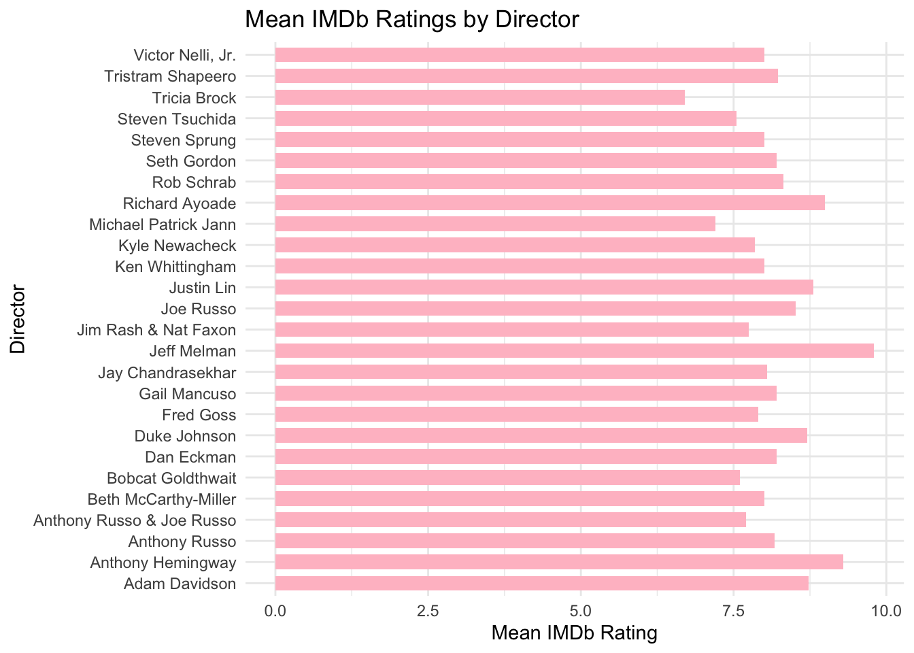
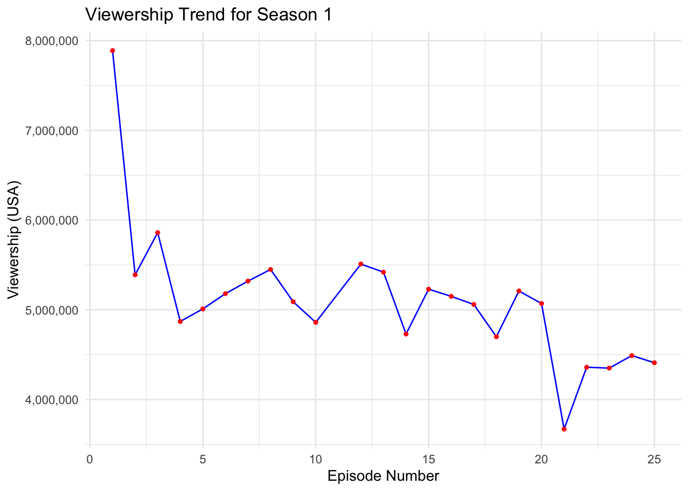

── Attaching core tidyverse packages ──────────────────────── tidyverse 2.0.0 ──
✔ dplyr 1.1.4 ✔ readr 2.1.5
✔ forcats 1.0.0 ✔ stringr 1.5.1
✔ ggplot2 3.5.0 ✔ tibble 3.2.1
✔ lubridate 1.9.3 ✔ tidyr 1.3.1
✔ purrr 1.0.2
── Conflicts ────────────────────────────────────────── tidyverse_conflicts() ──
✖ dplyr::filter() masks stats::filter()
✖ dplyr::lag() masks stats::lag()
ℹ Use the conflicted package (<http://conflicted.r-lib.org/>) to force all conflicts to become errors
community <-read_csv("Community.csv")
New names:
Rows: 109 Columns: 14
── Column specification
──────────────────────────────────────────────────────── Delimiter: "," chr
(4): title, directed_by, written_by, desc dbl (9): ...1, season,
episode_num_in_season, episode_num_overall, prod_cod... date (1):
original_air_date
ℹ Use `spec()` to retrieve the full column specification for this data. ℹ
Specify the column types or set `show_col_types = FALSE` to quiet this message.
• `` -> `...1`
community_data <- community %>%select(-c("episode_num"))library(shiny)
IMDb Ratings for Community episodes (all seasons)
season_colors <-c("1"="blue","2"="green","3"="red","4"="orange","5"="purple","6"="black")ggplot(community_data, aes(x = episode_num_overall, y = imdb_rating, color =as.factor(season))) +geom_point() +scale_color_manual(values = season_colors) +labs(x ="Episode", y ="IMDb Rating", title ="IMDb Ratings for Community episodes", color ="Season") +theme(plot.margin =margin(r =2, unit ="cm"))
# A tibble: 26 × 3
directed_by mean_imdb_rating count
<chr> <dbl> <int>
1 Jeff Melman 9.8 1
2 Anthony Hemingway 9.3 1
3 Richard Ayoade 9 1
4 Justin Lin 8.8 3
5 Adam Davidson 8.72 8
6 Duke Johnson 8.7 1
7 Joe Russo 8.52 20
8 Rob Schrab 8.32 10
9 Tristram Shapeero 8.23 24
10 Dan Eckman 8.2 1
# ℹ 16 more rows
ggplot(best_director, aes(x = directed_by, y = mean_imdb_rating)) +geom_col(fill ="pink", width =0.7) +labs(x ="Director", y ="Mean IMDb Rating", title ="Mean IMDb Ratings by Director") +theme_minimal() +coord_flip()

Scatterplot: IMDb Ratings for Community Episodes (Select season)
library(shiny)library(ggplot2)ui <-fluidPage(titlePanel("IMDb Ratings for Community Episodes"),sidebarLayout(sidebarPanel(selectInput("season", "Select Season:",choices =c("1", "2", "3", "4", "5", "6"),selected ="1") ),mainPanel(plotOutput("scatter_plot") ) ))server <-function(input, output) { output$scatter_plot <-renderPlot({ season_data <-subset(community_data, season == input$season)ggplot(season_data, aes(x = episode_num_overall, y = imdb_rating)) +geom_point() +scale_color_manual(values = season_colors) +labs(x ="Episode", y ="IMDb Rating", title =paste("IMDb Ratings for Community episodes (Season", input$season, ")")) +theme(plot.margin =margin(r =2, unit ="cm")) })}shinyApp(ui = ui, server = server)
Shiny applications not supported in static R Markdown documents
season_1_data <- community_data %>%filter(season ==1)# Create a line chart for Season 1ggplot(season_1_data, aes(x = episode_num_in_season, y = us_viewers)) +geom_line(color ="blue") +geom_point(color ="red", size =1) +# Add points for each data pointlabs(title ="Viewership Trend for Season 1",x ="Episode Number",y ="Viewership (USA)") +theme_minimal() +scale_y_continuous(labels = scales::comma)

Line graph: Community Viewership Trends per Season